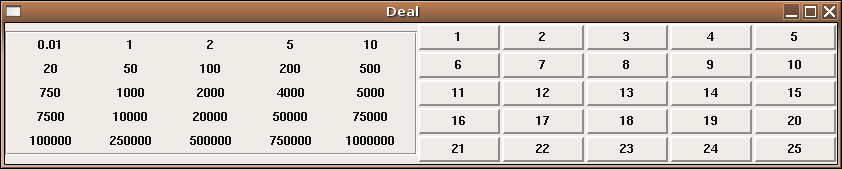

Deal or No Deal
1 Deal or No Deal
Just for fun, I've created an R program to play the "Deal or No Deal"
show that originated in England, and now is popular in the United States.
The way the game works is that there are 25 (26 on the show)
numbered briefcases,
each containing a piece of paper with an amount of money ranging from
1 cent to 1000000 dollars.
The player chooses one of the cases, which will
not be opened until the end of the game. Then, the player chooses numbered
cases, one at a time, and gets to see their contents. As each dollar amount
is shown, its value is grayed out on a display showing all the possible
dollar amounts. Based on the remaining possible amounts (one of which is
in the case chosen by the player), the "banker" periodically calls with
an offer to buy the player's case, based on the quantities which haven't
been displayed yet, and the player must either accept the offer, or continuing
looking inside the remaining cases.
In this version of the game, the first button clicked on represents the player's
choice. After that, clicking a button reveals its amount, and greys out that
amount on the left side of the display. When the banker makes an offer, a
button with that amount appears at the bottom of the display. If you click on
the button, you accept the offer, and can now "open" the chosen case to see
if you made a wise choice. If you ignore the button, you can keep opening
cases, until the next offer.
Here's a screenshot:

Here's the R code to run the game:
require(tcltk)
mk = function(b,text){
but = b
txt = text
function(...){
if(is.null(choice)){
tkconfigure(but,state='disabled',disabledforeground='red',relief='groove',borderwidth=2)
choice <<- but
return()
}
tkconfigure(but,text=txt,state='disabled',disabledforeground='darkgreen')
k = which(amounts == as.numeric(txt))
amounts[k] <<- NA
tkconfigure(donelabs[[k]],fg='gray')
count <<- count + 1
if(count == bnkr)banker()
}
}
banker = function(){
# if you have a command line program that can make a
# phone sound effect, you can invoke it here using the
# system() command
count <<- 0
mm = mean(amounts,na.rm=TRUE)
more = runif(1,-.5,.5)
mm = (mm + more * mm) %/% 1000 * 1000
cat(mm,'\n')
but = tkbutton(bankfrm,command=bank,text=paste(mm))
tkpack(bankfrm,but,side='left')
tkcmd('update')
bnkr <<- ifelse(bnkr == 5,4,ifelse(bnkr == 4,3,1))
}
bank = function(){
tkconfigure(choice,state='active',activeforeground='red')
tkpack(tklabel(bankfrm,text='Accepted!'))
count <<- -100
}
amounts = c(.01,1,2,5,10,20,50,100,200,500,750,1000,2000,4000,5000,7500,10000,20000,50000,75000,100000,250000,500000,750000,1000000)
rand = sample(1:25)
case = amounts[rand]
bnkr = 5
count = 0
base = tktoplevel()
tkwm.title(base,'Deal')
mainfrm = tkframe(base)
donefrm = tkframe(mainfrm,relief='groove',borderwidth=2,padx=4)
rowfrms = list()
donelabs = list()
choice = NULL
k = 1
for(i in 1:5){
rowfrms[[i]] = tkframe(donefrm)
for(j in 1:5){
donelabs[[k]] = tklabel(rowfrms[[i]],text=amounts[k],width=10,padx=3,pady=3)
tkpack(rowfrms[[i]],donelabs[[k]],side='left')
k = k + 1
}
tkpack(rowfrms[[i]],side='top')
}
tkpack(donefrm, side='left')
caseframe = tkframe(mainfrm)
crowfrms = list()
casebuts = list()
k = 1
for(i in 1:5){
crowfrms[[i]] = tkframe(caseframe)
for(j in 1:5){
casebuts[[k]] = tkbutton(crowfrms[[i]],text=paste(k),width=10,padx=3,pady=3)
tkconfigure(casebuts[[k]],command=mk(casebuts[[k]],case[k]))
tkpack(crowfrms[[i]],casebuts[[k]],side='left')
k = k + 1
}
tkpack(crowfrms[[i]],side='top')
}
tkpack(caseframe,side='left')
tkpack(mainfrm)
bankfrm = tkframe(base)
tkpack(bankfrm,side='bottom')
2 What can you learn from the program?
This program illustrates the use of the tkconfigure program, as
the text and color of the buttons and the display keeping track of the
amounts are changing at each stage of the game. It's also a nice illustration
of how to "remember" values as interaction with the GUI progresses. Notice
how the variables count, bnkr, and choice are
updated or modified in the callback functions using the <<- assignment
operator. This insures that the values will persist after the function call
ends.
Perhaps the most useful feature of this program has to do with the callback
functions for the buttons. Each button is associated with a number and a
dollar amount, and when the buttons are pressed, the action that takes place
depends on which number and dollar amount the button represents. However
callback functions are called without arguments. So how can the buttons
"know" what dollar amount they represent?
The answer is a feature in R which is found in many languages, known as a
closure.
Notice the line which assigns the callback to the buttons that represent the
cases:
tkconfigure(casebuts[[k]],command=mk(casebuts[[k]],case[k]))
The function to be used as a callback is returned by the mk
function. If you examine the function, you'll note that the first step is
to copy the arguments passed to it (in this case the variable representing the
button and the amount of money in the "case") into local variables. The way
a closure works is that when a function is created in an evironment that
contains local variables, any reference to these local variables is resolved
with the value the variable had when the function was created. That means that
each time the mk function is called, it returns a function where the
values of the button and the amount of money are set to the ones passed to the
function at the time it was created. Thus, when the button is pressed, the
callback function "knows" which button it was, and what amount it represented.
File translated from
TEX
by
TTH,
version 3.67.
On 19 Apr 2006, 13:42.